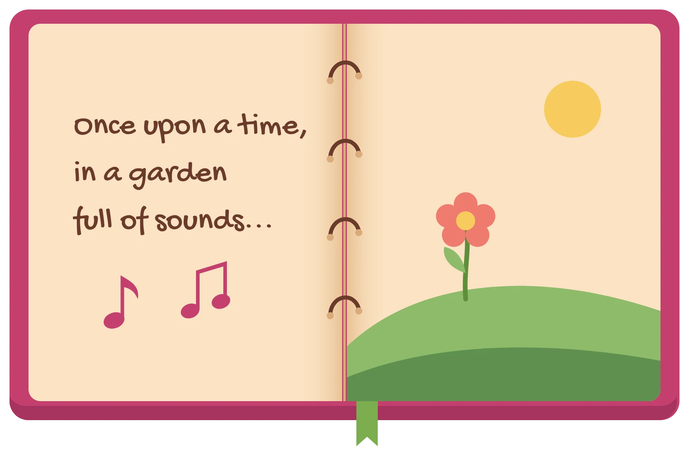

Each garden holds the same ten objects: four gardening tools, three animals and three fruits. Tap an object to start or stop its sound, and drag it to move it. Higher places play higher notes, and places further right repeat faster.